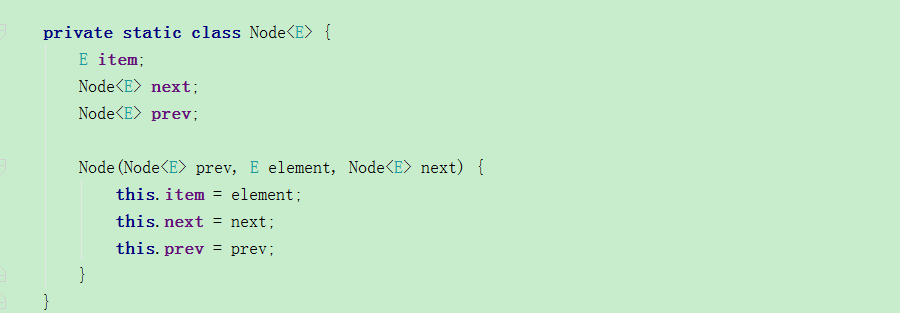
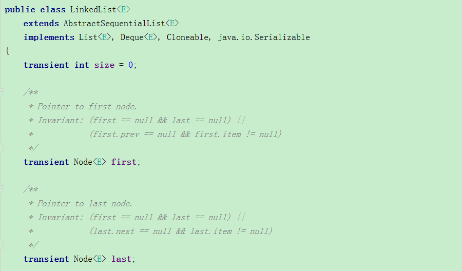
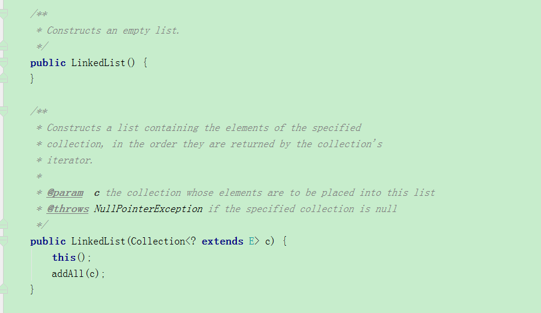
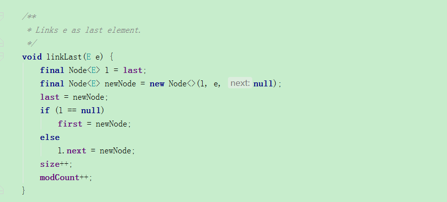

LinkedList
- LinkedList简介
- LinkedList源码分析
- LinekdList常见操作总结
LinkedList简介
- LinkedList作为List的一个实现，与ArrayList采用数组作为数据存储不一样的是，其采用了链表Node作为底层的数据存储
- LinkedList不单单实现了List接口，而且也实现了Deque接口，所以可以把其当做一个双向队列使用
- LinkedList允许存放Null值
- LinkedList由于采用了链表作为数据存储,所以最显著的特性在于插入快，但查询慢，这一点恰恰与ArrayList相反
LinkedList源码分析
成员变量
LinkedList内部持有Node来作为存储容器，我们可以看到Node的源码本身就是个双向链表的实现，在每个Node中，存放了当前节点的值，以及前一个节点prev以及后一个节点next

在LinkedList内部的成员变量中，则只存放了first node 和 last node

构造方法
LinkedList为我们提供了2种构造方法，分别是：
- 无参构造方法
- 使用特定集合的构造方法
第一种为LinkedList初始化，其中不含任何node，第二种直接使用Collection中的元素填充到LinkedList

核心方法
LinkedList由于实现了Deque操作，因此其含有众多的队列操作方法，在此我们简单的看一下其add remove方法是如何实现的。
add方法:

remove方法:
remove方法只会移除第一个相等的元素哟！
队列操作
linkedlist提供了基础的队列操作，总结如下:
总结
- LinkedList的底层实现是链表
- LinkedList是非线程安全的
- LinkedList遵循 fail-fast 机制，在执行add remove 等结构性修改的操作时，会抛出异常，若要在遍历过程中添加或修改元素，可以使用迭代器
- LinkedList实现了Deque接口，所以我们可以把其当做一个双向队列的数据接口来使用